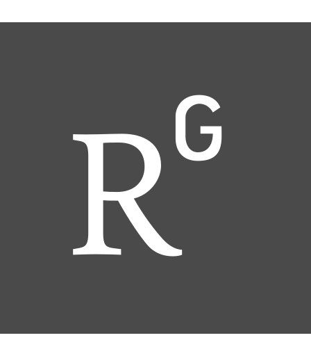
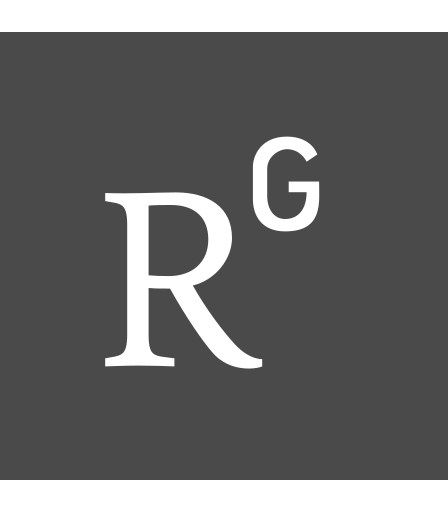

教育 龍華科技大學 資訊管理碩士 Aug 2015 – Jun 2017 資訊管理學士 Aug 2011 – Jun 2015 書卷獎 (Nov 2012, Apr 2013, Oct 2013 和 May 2014) 學程: 資訊金融學程; 三創學程
工作 OxBridge Consulting Inc 工程師 Dec 2018 – Jul 2020 使用者介面設計 前後端開發 產品系統測試 程式語言和軟體使用: JavaScript 、 AngularJS 、 PHP 、 CSS 、 MySql 、 AWS 和 Ubuntu Server Compulsory Military Service 下士 Dec 2017 – Dec 2018 軍事訓練 龍華科技大學 研究室與教學助理 Aug 2014 – Aug 2016 網路設備維護 學術教學伺服器課程和 R 程式語言 JGNet Taiwan 網路工程師 May 2014 – Aug 2014 社區網路安裝與維護
專業技能 程式語言 R 、 PHP 、 JavaScript 、 Java 、 Python 、 C# 、 Visual Basic 、 CSS 伺服器管理 Ubuntu 、 RedHat 、 SuSE 、 Windows Server 資料庫設計 MariaDB 、 Oracle 11g 、 MS SQL 、 Hadoop 專案管理 GitHub
專業證照 e-Enterprise Data Analyst, 2016 Red Hat Certified System Administrator (RHCSA), 2015 Novell Certified Linux Administrator (NCLA 11), 2014 Oracle Certified Expert (OCE 10g), 2014 Oracle Certification for Java Programmer (OCJP 6), 2013 IPMA Certified Project Management Associate (Level D), 2013
研究與專案 中國企業去槓桿化對總體經濟的影響 (Jan 2019 – Dec 2019) 描述 本研究首先以動態隨機一般均衡模型 (Dynamic Stochastic General Equilibrium; DSGE) 來分析中國自 1992 年至 2017 年各季度總產值、年利率和通貨膨脹率對於中國整體經濟社會的波動性。接著再以向量自迴歸模型 (Vector Autoregression Model; VAR ) 進行分析，從而得知非金融企業去槓桿對總體經濟成長率短期會有負面影響，過程隨時間的增加影響減小。長期而言，非金融企業去槓桿對總體經濟增長率影響極小，故建議中國政府在進行去槓桿應在短期時配合適當財政或貨幣政策，以降低去槓桿所產生的經濟成長率衝擊降低，來達到穩定經濟的目的。 關鍵字 動態隨機一般均衡模型、向量自迴歸模型、濾波法、 總體經濟、景氣循環理論、巴塞爾協定 III、影子銀行、去槓桿 學業成就分析系統之研究：使用集群分析與視覺化 (Aug 2015 – Sep 2017) 描述 該研究專案開發了一個交互式學業成績分析系統，並分析 2008 年以後進入龍華科技大學管理學院的學生在不同類型的課程中的表現，包含他們的經濟狀況和畢業後的就業情況進行分析。 從而可以根據個別學生的初始情況預測畢業後的職業發展。 Hao-Cheng Kan & Fang-Ling Lin (10 Dec 2016). The Impact of Student Loans on Academic Performance: A Cluster and Visual Analysis. presented at the 22th CSIM IMP, Taichung, Taiwan. 程式語言和軟體使用 R、 RShiny Server、 MariaDB 和 Ubuntu Server S-Gate 行動教學系統 (Aug 2013 – Aug 2015) 描述 本專案基於電子校園的概念設計了一個行動教學系統，具有兩種功能。 第一部分簡化了學生事務和課堂管理的操作，啟用了藍牙點名等活動。 第二部分則是實現了使用手機設備進行實時課堂互動，比如教學內容交付、評估、小組討論、問答等功能。 程式語言和軟體使用 Node.js、 JS、 PHP 、 MariaDB 、 Android 和 Ubuntu Server


 
